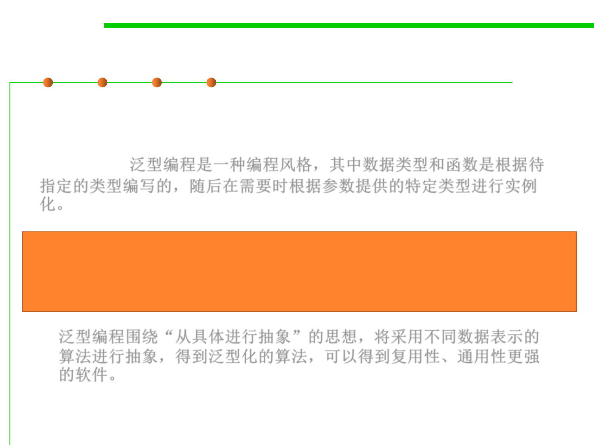

Parametric polymorphism
3.4 Object-Oriented Programming (OOP)
▪ Generic programming is a style of programming in which data types
and functions are written in terms of types to-be-specified-later that
are then instantiated when needed for specific types provided as
parameters. 泛型编程是一种编程风格，其中数据类型和函数是根据待
指定的类型编写的，随后在需要时根据参数提供的特定类型进行实例
化。
Generic programming centers around the idea of abstracting from
concrete, efficient algorithms to obtain generic algorithms that can be
combined with different data representations to produce a wide variety of
useful software.
泛型编程围绕“从具体进行抽象”的思想，将采用不同数据表示的
算法进行抽象，得到泛型化的算法，可以得到复用性、通用性更强
的软件。